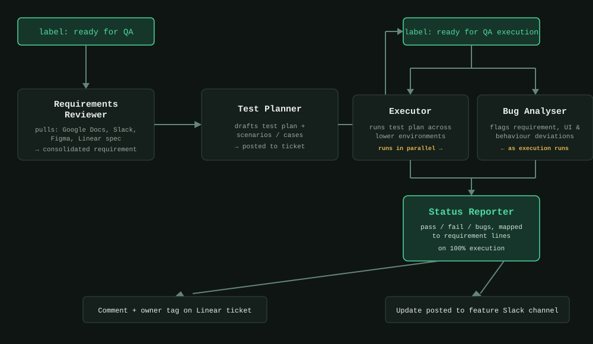
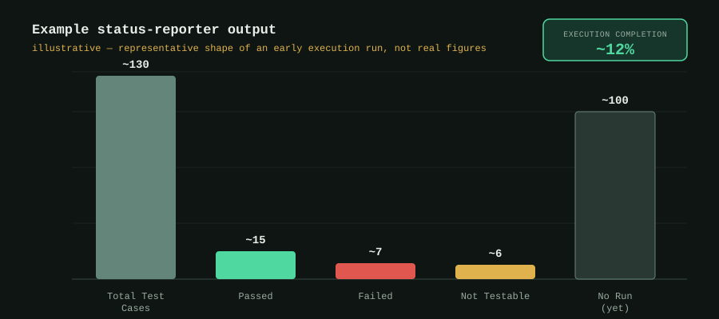

agentic ai · qe leadership
Building a QA Agent Pipeline: Early Lessons from a POC
What it looks like to route a requirement through a requirements-reviewer, test-planner, executor, bug-analyser, and reporter agent — and where the pipeline still breaks on real projects.
For 16 years, my job has had the same shape regardless of the company: someone writes a requirement, someone builds it, and somewhere in between, QA has to figure out what "done" actually means — often by chasing that requirement across five different tools.
That chase is what I set out to remove first.
The problem we were actually solving
On any given feature, the "requirement" doesn't live in one place. Part of it is a Google Doc. Part of it is a Slack thread where a PM clarified an edge case three weeks ago. Part of it is a Figma prototype nobody annotated. And part of it is a one-line spec attached to a Linear ticket almost as an afterthought.
None of that is anyone's fault — it's just how fast-moving teams actually work. But it means a QA engineer's first real task on any ticket isn't testing. It's archaeology. And archaeology doesn't scale, especially when you're trying to bring AI-assisted testing into an org that still moves at human speed.
So the POC wasn't "let's use AI to write test cases." It was: what if the requirement-gathering step itself became a pipeline, not a scavenger hunt?
The high-level setup
The system is triggered entirely by how a Linear ticket is labeled — no separate tool for engineers or PMs to learn.
Step 1 — Ready for QA. When a ticket is labeled ready for QA, a hook fires and hands the ticket to a requirements-reviewer agent. Its only job is to go pull together everything relevant — the linked Google Doc, the referenced Slack channel discussion, the Figma prototype, and whatever spec is attached to the ticket itself — and consolidate it into one coherent picture of what's actually being asked for.
Step 2 — Planning. That consolidated requirement gets handed to a test-planner agent, which drafts a test plan and a set of test scenarios and cases against it.
Step 3 — Ready for QA execution. Once the ticket is re-labeled to signal execution should start, an executor agent runs the plan across our lower environments. In parallel, a separate bug-analyser agent watches for deviations — mismatches against the requirement doc, UI inconsistencies, unexpected application behavior — rather than waiting for the whole run to finish first.
Step 4 — Reporting. Once execution hits 100%, a status-reporter agent takes over: it pulls together pass/fail counts, maps any bugs back to the specific requirement lines they violate, comments that summary directly on the original Linear ticket, tags the ticket owner for visibility, and posts an update to the feature's Slack channel.
End to end, a ticket goes from "labeled ready for QA" to "here's your test summary and any bugs, already mapped to what you asked for" — without a human manually stitching together docs, chasing Slack threads, or writing the status update by hand.

Where it actually got hard
The architecture above sounds clean in a diagram. It was not clean in practice, and that's really the point of writing this up.
Requirements are often genuinely incomplete, not just scattered. Early on, the requirements-reviewer agent would confidently consolidate a requirement that was missing a decision entirely — because no one had actually made that decision yet. The fix wasn't a smarter agent; it was building in an explicit "here's what's still ambiguous" output, so a human sees the gap instead of the pipeline silently guessing.
Parallel bug detection created noise before it created value. Running the bug-analyser alongside execution, rather than after, was the right call for speed — but it also meant we surfaced a lot of transient environment flakiness as if it were a real defect. We had to teach the pipeline to distinguish "this failed because of the app" from "this failed because the lower environment hiccuped," which took several rounds of tightening before the signal-to-noise ratio was trustworthy enough for anyone to actually read the reports.
Mapping bugs back to requirement lines is deceptively hard. It's one thing to say "this test failed." It's another to say "this failed because of paragraph three of the spec, not paragraph one" — and that mapping is what makes the final report actually useful instead of just another list of failures. Getting that traceability right took more iteration than the testing logic itself.

Trust had to be earned ticket by ticket. The team didn't fully lean on the automated status report on day one, and they shouldn't have — early reports had gaps, and pretending otherwise would have cost more trust than it built. The report only became something people acted on directly once it had a track record of being right.
Where this stands
This is still a POC, not a finished framework — and I want to be upfront about that rather than oversell it. But even at this stage, the shift already feels real: QA's first move on a ticket is no longer "let me go find out what this actually means." That step increasingly happens before a human is even looking at the ticket.
The next round of work is less about the agents themselves and more about calibration — tightening how confidently the bug-analyser flags something as a real defect, and making the ambiguity-detection in requirements-review sharper so it catches gaps earlier rather than downstream.
More on that as it develops.